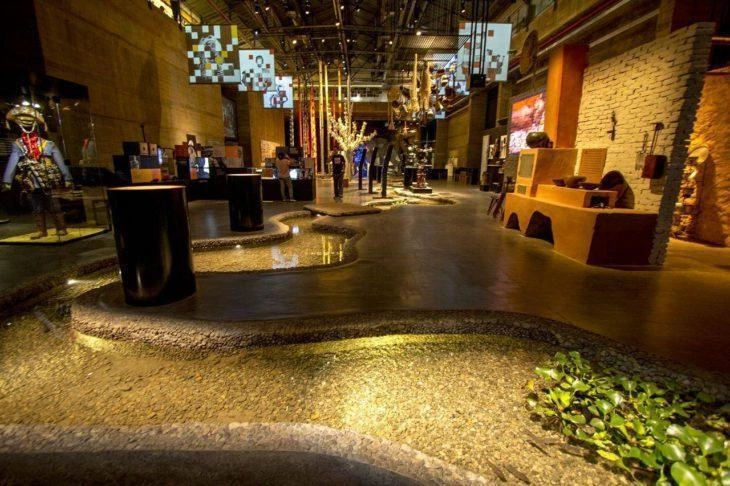
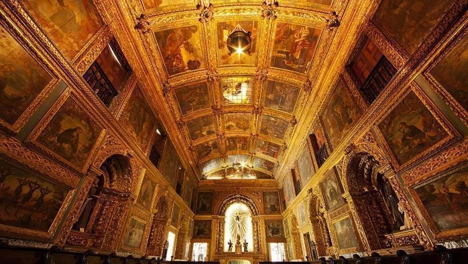

Museu Cais do Sertão
Localizado no Recife Antigo, o Cais do Sertão é uma viagem pela história e pela cultura dos povos sertanejos.
Capela Dourada
Outro destino imperdível na região do Recife Antigo é a Capela Dourada, um belíssimo templo localizado na Rua do Imperador